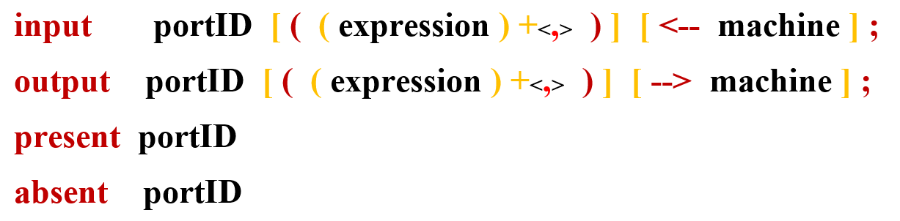

Here is the general syntax (see BNF syntax) :
Input and output instructions enable the sending and reception of messages or signals that might contain parameters. The sending machine (in the case of an input), or the receiving machine (in the case of an output), can be specified.
Keywords "present" and "absent" check whether a message is present or absent on a given port.